Step by step, with screenshots: put live lap times on your HDZero footage with one Text+ box. Click any picture to enlarge it. Red numbers in a picture match the numbered list under it.
1Install the HDZero OSD font
Do this first, so the font is in Resolve's list later. The goggle OSD is drawn from a bitmap, not a normal font, so Resolve has nothing like it. This font is that bitmap converted to a real .ttf: wide, rounded-square letters and digits that are all the same width, so the numbers do not jitter as they count.
F:4:25
4S 3.93V
MAXDAX 3
0123456789
Live preview: this text is set in the font itself.
Windows: right-click the file → Install for all users.
Mac: double-click the file → Install Font.
If DaVinci Resolve is open, close it and start it again. Resolve only reads the font list at start.
You will see the font as HDZero OSD in the Text+ Font list (step 4 below).
What is in it
Digits, capital letters A–Z (lowercase shows as capitals, like the OSD), and . : - + / % & ( ) ! ? , ; = < > @ [ ] \ ^ _ #. No arrows or battery symbols. It is a pixel font: scaled up a lot it looks blocky, like the OSD itself. It has no black edge, which is why a Shading outline is added in step 4.
The shapes come from the HDZero goggle firmware font BTFL_000.bmp (hd-zero/hdzero-goggle, MIT license). This is an unofficial conversion, not made or endorsed by HDZero.
2Project, video and Text+ box
2.1Create a project
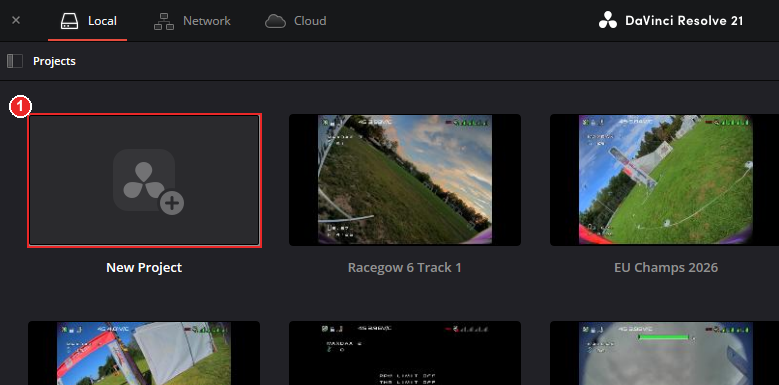
Start Resolve. In the Project Manager, double-click New Project.
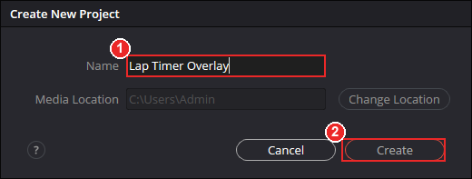
Type a name, for example Lap Timer Overlay.
Click Create.
2.2Import the video
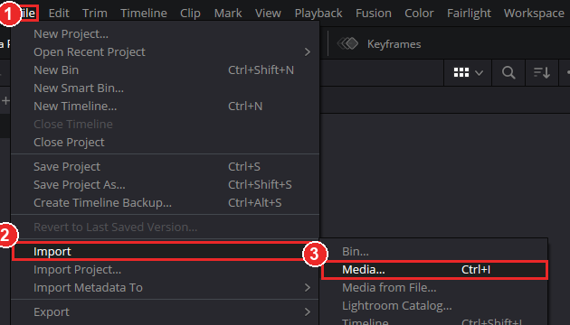
Open the File menu.
Go to Import.
Choose Media… (shortcut Ctrl+I).
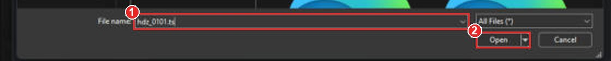
Type or paste the path of your video file, or browse to it.
Click Open.
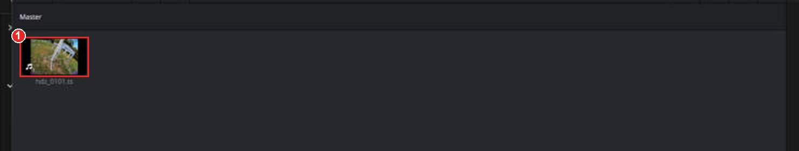
Your clip now sits in the Media Pool.
HDZero .ts files import fine. If Resolve cannot read yours, convert it to MP4 first with the ts2mp4 converter (ffmpeg scripts for converting, upscaling and cropping .ts files).
2.3Make a timeline
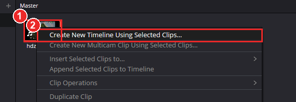
Right-click the clip.
Choose Create New Timeline Using Selected Clips…
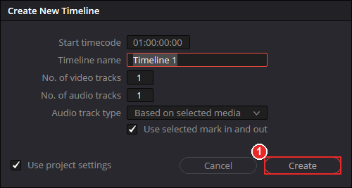
Click Create.
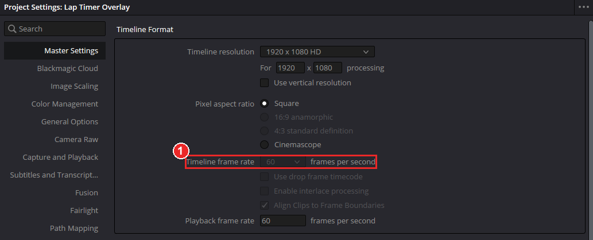
Check your timeline frame rate: File → Project Settings (Shift+9) → Timeline frame rate. Remember the number (here 60). You enter it in the lap timer in step 3.
2.4Add the Text+ box
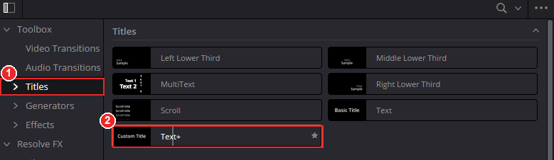
On the Edit page open Effects → Toolbox → Titles.
Drag Text+ onto the timeline, above your video. Drop it at the very start of the clip. Resolve creates a new track (V2) for it.
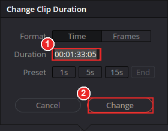
Click the Text+ clip and press Ctrl+D (Change Clip Duration). Type the length of your video (the time shown next to the timeline name).
Click Change.
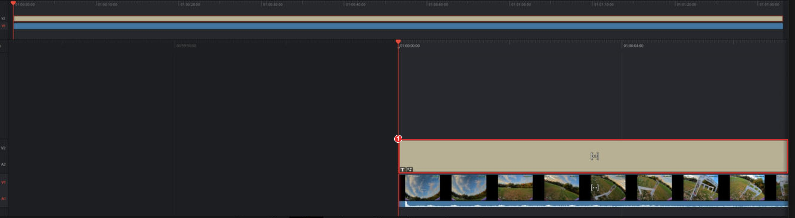
The Text+ clip now covers the whole video. The text stays empty until the best 3 laps start, so it must cover that part.
3Copy the expression and paste it in
3.1Copy it from the lap timer
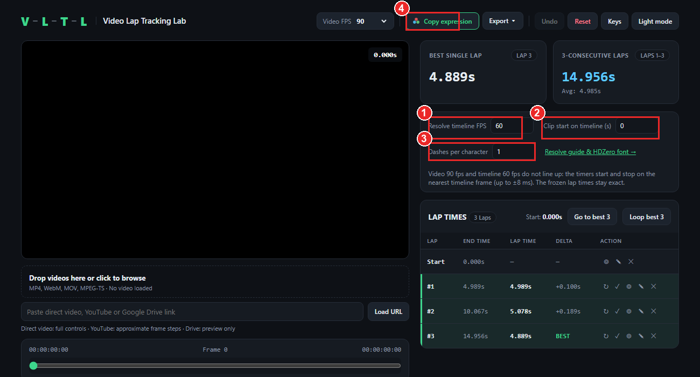
Resolve timeline FPS: the number from step 2.3 (here 60).
Clip start on timeline (s): 0 when the Text+ box and your video start at the same place. If the video starts later than the Text+ box, enter that gap in seconds. If the start of the video is trimmed off, enter the trimmed time as a negative number.
Dashes per character: length of the dashed line under the total. 1 with the HDZero OSD font, about 1.5 with normal fonts.
Press Copy expression.
Before this, mark your laps in the lap timer until it shows your best 3 consecutive laps.
If the page shows a note that the video FPS and the timeline FPS do not line up, the timers start and stop on the nearest timeline frame (a few milliseconds off). The frozen lap times shown at the end are still exact.
3.2Add the expression to the Text+ box
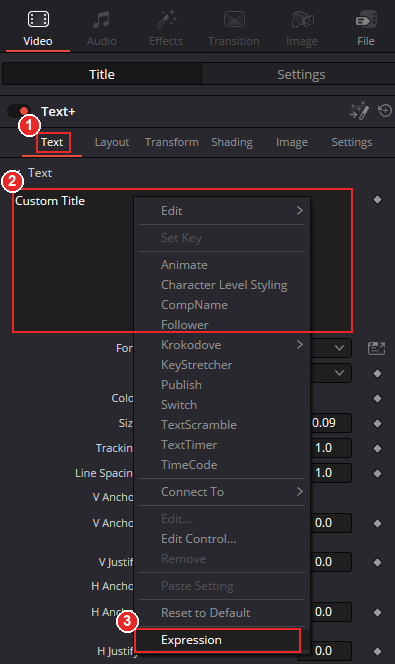
Click the Text+ clip in the timeline. Open the Inspector (top right) → Title tab → Text tab.
Right-click the big text field (“Styled Text”).
Choose Expression at the bottom of the menu. A small expression line appears under the text field.
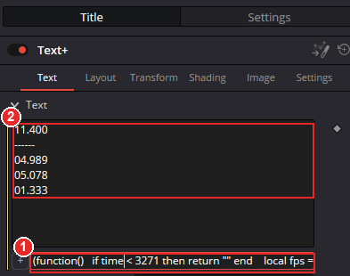
Click into the expression line, select all (Ctrl+A), paste (Ctrl+V) and press Enter.
The text field now shows the timers.
4Text, Layout and Shading settings
These are the values used for HDZero 4:3 DVR footage (960×720) with the overlay in the top right. All three tabs (Text, Layout, Shading) are in the same Inspector, under the Title tab.
4.1Text tab: font and size
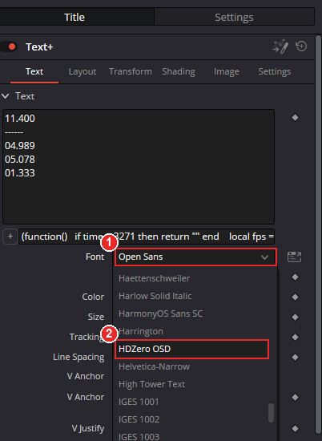
Click the Font box.
Pick HDZero OSD, style Regular. It is near the “H” fonts. (Not in the list? See step 1 and restart Resolve.)
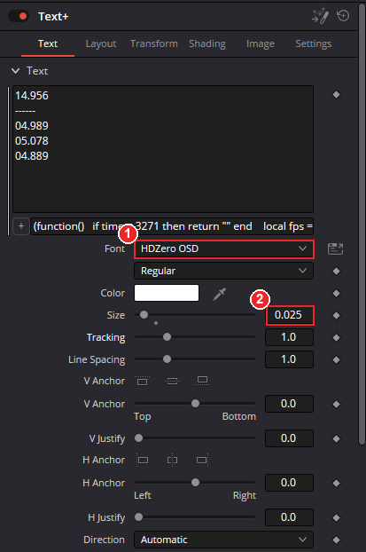
Font is now HDZero OSD, style Regular.
Set Size to 0.025. Leave the rest as it is.
4.2Layout tab: move it to the top right
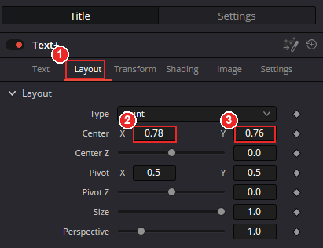
Open the Layout tab. Type stays Point.
Set Center X to 0.78.
Set Center Y to 0.76.
4.3Shading tab: the black edge the real OSD has
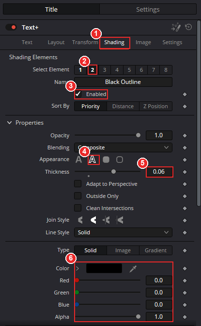
Open the Shading tab.
Click element 2. It is switched off at first.
Tick Enabled. You can rename it Black Outline.
Appearance: the outline (second icon).
Set Thickness to 0.06.
Set the color to black: Red, Green, Blue all 0.0, Alpha 1.0.
All values at a glance (green = differs from a plain Text+)
Text tab
Setting
Value
Text+ default
Font
HDZero OSD, Regular
Open Sans
Color
white
white
Size
0.025
0.09
Tracking / Line Spacing
1.0 / 1.0
1.0 / 1.0
V and H Anchor, V and H Justify
0.0 (text is centred on the Center point)
0.0
Layout tab
Setting
Value
Default
Type
Point
Point
Center X
0.78
0.5
Center Y
0.76
0.5
Center Z
0.0
0.0
Pivot X / Y
0.5 / 0.5
0.5 / 0.5
Size / Perspective
1.0 / 1.0
1.0 / 1.0
Shading tab, Element 2
Setting
Value
Name / Enabled
Black Outline / on
Sort By
Priority
Opacity / Blending
1.0 / Composite
Appearance
Outline (second icon)
Thickness
0.06
Adapt to Perspective, Outside Only, Clean Intersections
all off
Line Style
Solid
Type / Color
Solid, black (R 0, G 0, B 0), Alpha 1.0
Using another resolution or aspect ratio? Change only Size until the digits are as tall as the OSD digits, then adjust Center X/Y. If you change Size, scale the outline Thickness by the same factor.
5Result
Back on the Edit page, move the playhead over your best 3 laps. The counters count up live, freeze when each lap ends, and show the 3-lap total on top.
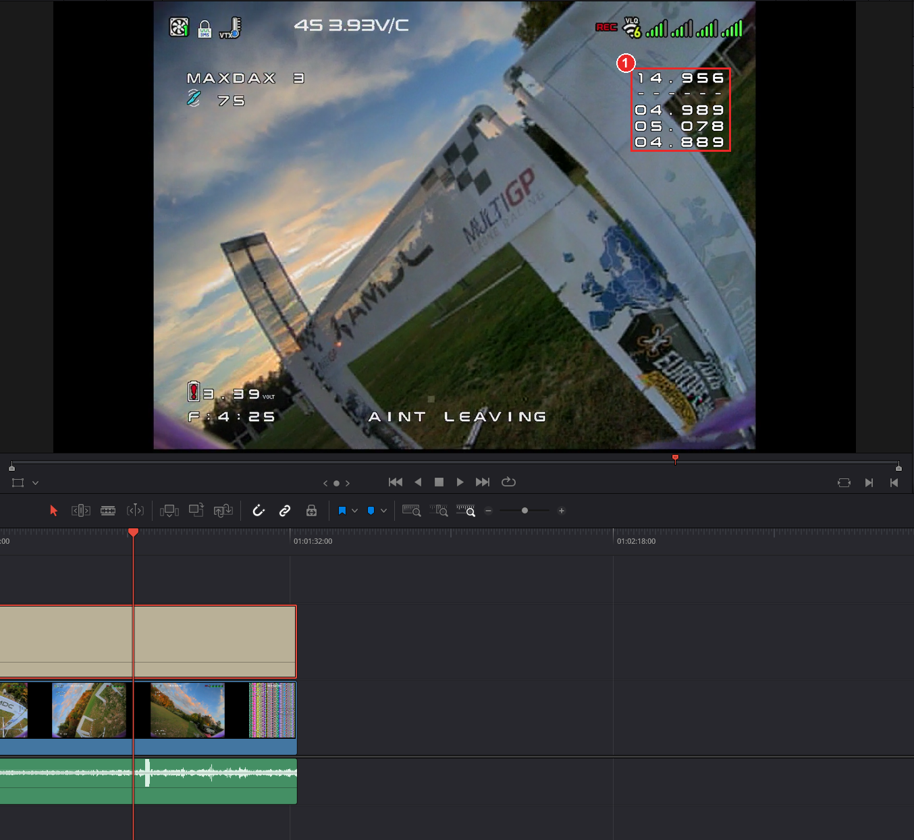
Total of the 3 laps, a dashed line, then lap 1, lap 2 and lap 3 (frozen at their exact times).
This is how it looks with 1 dash per character:
14.956
------
04.989
05.078
04.889
With the HDZero OSD font and a black outline.
6Trim and edit your video
When the setup above is finished, you can cut and trim as much as you like. Link the video and the Text+ box first, so they stay lined up (the timers count from the start of the Text+ box).
In the timeline, select the Text+ clip and your video clip.
Right-click one of them → Link Clips (shortcut Ctrl+Alt+L). A tick next to it means they are linked.
Now trim, cut and move the clips as much as you want. The video and the Text+ box move together, so the timers stay in step with the video.
Do the setup and check the timers before linking. If you trim the video or the Text+ box on their own (not linked), the timers no longer match the video.
If something looks wrong
The font is not in the list: restart Resolve after installing. On Windows pick “Install for all users”.
The timers start at the wrong moment: check Clip start on timeline (s) and the timeline FPS, then copy the expression again. A pasted expression does not update itself.
The dashed line is too long or too short: change Dashes per character on the lap timer page and copy the expression again.
Nothing is shown: the text stays empty before the best 3 laps begin, and the Text+ box has to cover that part of the timeline.
The text is too big or too small: change Text Size only, then fix the outline thickness to match.